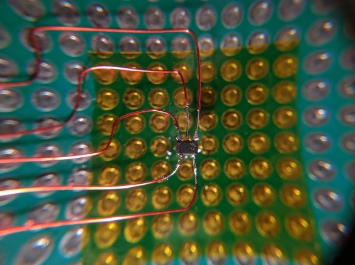
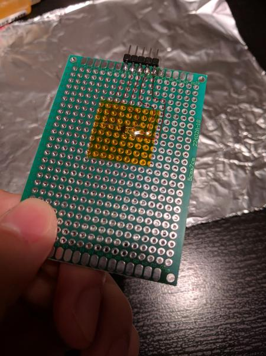
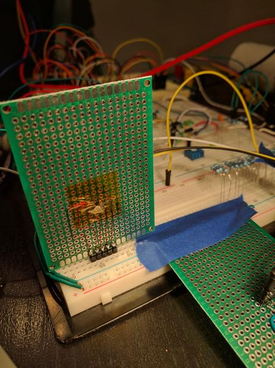

The last time I breadboarded an IC with an SC-70 package, I didn't have any prototyping boards with me, so I resorted to paper. I regard that as a bad move, because the paper is flexible. Flexing motion eventually rips the wires off of the package.
This time, I got mini prototyping boards to hold everything together. The board makes the connections to the package more reliable, especially for repeated insertions on a breadboard.

Figure 1. A freshly soldered ICBefore soldering, the prototyping board was covered with Kapton (Polyimide) tape to prevent the package's pins from touching the plated holes. Then, a drop of thick flux was placed on the taped area to stick the IC onto the tape. The flux holds the IC still to make soldering the first wire onto the IC easier. Note that after soldering, the IC is mainly held in place by the wires soldered to it and not by the flux.

Figure 2. A completed boardThe wires are 32 AWG magnet wire with easily burnable insulation. These wires connect the IC to breadboard-compatible header pins mounted on edge of board. Since the forces of insertion act on only the header pins and board, the wires and IC are undisturbed. The header pins are mounted horizontally on the edge so the prototyping board won't take up unnecessary breadboard space.
After soldering is complete, another layer of Kapton tape is added to hold the IC and its wires down.

Figure 3. The board on a breadboardWritten on the 6th of October in 2016
{kind=link}
{kind=link}
{kind=link}